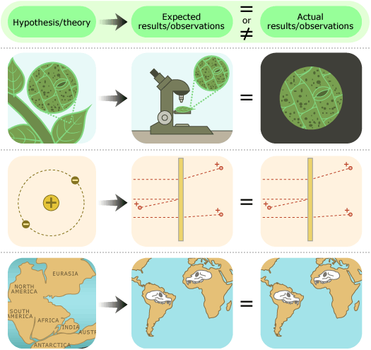

In this section, we've seen that scientific arguments are formed by figuring out what we would expect to observe if a particular idea were true and then checking those expectations against what we actually observe. A match between expectations and observations lends support to the idea, while a mismatch helps refute the idea. That is the simple, but powerful, core of a scientific argument. This core applies across the board, whether we are investigating broad theories or minute hypotheses, whether we are investigating mechanisms so small we can't observe them with a microscope, so distant we can't see them with a telescope, so far in the past that no human was there to observe them, or so commonplace that they must be at work every time an object falls to the ground. While scientific disciplines vary in their focus of study, they all take this same approach to forming scientific arguments.
Scientific arguments are built through interactions within the scientific community. To learn more about the community's role in science, read on …